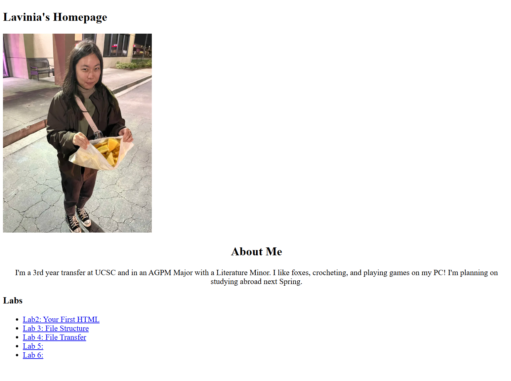

Lab 3 - File Structure and File Transfer
Challenge
At first, I struggled with trying to find the right folder to put the HTML in, until I realized that it was just editing our homepage. I was looking at the lab 3 folder the entire time, and thinking about how I was going to integrate the lab into the lab 3 file. After I figured that out, I had trouble getting my links to work.
Problems
I had trouble getting my links on my website to actually link to my other webpage. I put my code into ChatGPT, and it told me I was just missing ".." at the beginning of the file I wanted to link it to.
Reflection
It wasn't as easy as I thought. I started off really rough, but I eventually understood the assignment an hour later. Even though I struggled, I was able to eventualy learn how to attach an image in my code and also how to link to other websites on my website. I was asking my partner for help and trying to troubleshoot what was wrong.
Results:
This is a screenshot showing my file structure in VSCode.
This is a screenshot showing the HTML for my homepage.
This is a screenshot showning the CSS for my homepage.
This is a screenshot showing my webpage.
This is a screenshot showing the HTML for Lab 3.
This is a screenshot showing the CSS for Lab 3.

This is a screenshot showing the webpage for Lab 3.